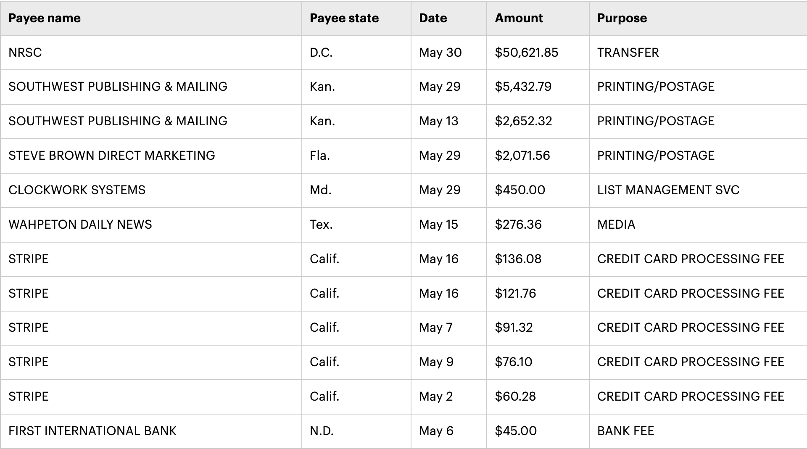

# Extract the unique purposes
unique_purposes = data['purpose'].unique()
# Creating a DataFrame with the unique purposes and a column for standardized names
standardized_purposes = pd.DataFrame(unique_purposes, columns=['original_purpose'])
# For demonstration purposes, we'll standardize the names manually
# In a real-world scenario, this would likely involve more complex logic or a lookup table
# Function to standardize purpose descriptions
def standardize_purpose(purpose):
purpose = purpose.lower()
if 'transfer' in purpose:
return 'Transfer'
elif 'insurance' in purpose:
return 'Insurance'
elif 'legal' in purpose:
return 'Legal Consulting'
elif 'printing' in purpose or 'postage' in purpose:
return 'Printing/Postage'
elif 'payroll' in purpose:
return 'Payroll'
else:
return 'Other'
# Apply the standardization function
standardized_purposes['standardized_purpose'] = standardized_purposes['original_purpose'].apply(standardize_purpose)
# Save the standardized purposes to a new CSV file
output_path = '/mnt/data/standardized_purposes.csv'
standardized_purposes.to_csv(output_path, index=False)
import ace_tools as tools; tools.display_dataframe_to_user(name="Standardized Purposes", dataframe=standardized_purposes)
# Display the result
standardized_purposes.head()If there’s anything that I’ve developed an expertise in in the past 25 years, it’s campaign finance data. And if there’s anything I’ve been really into during the past year, it’s large language models (LLMs). You might think this is a story about how I’ve combined the two.
But it’s not, because mostly I don’t, and I’d like to explain why.
Because most campaign finance data is structured - in rows and columns - some of the tasks that LLMs are most impressive at doing don’t necessarily apply here. I’m thinking of extracting information based on patterns or reasoning, or summarizing text. Yes, LLMs can do math; they are built atop math! But when I had students in my AI class this spring have LLMs do data analysis by uploading structured data and asking systems to do typical tasks such as counting rows or grouping things, most of them struggled to do so consistently.
To be fair, this was done using the Web interfaces to these LLMs, not via APIs where a user has more control. But among the tasks students tried was getting the LLM to count the number of rows that met a certain criteria (filtering, essentially) and some other pretty low-level data analysis tasks. They were not impressed.
To further illustrate this, let me turn to campaign finance data. One of the big challenges at the federal level is the standardization of donors, campaign vendors and the purposes of spending, among other things. There are organizations who do great work on standardizing donors - OpenSecrets is the big name in this field - and there are folks like Adam Bonica at Stanford who write software to standardize donors using machine learning. There’s some artificial intelligence in that, but it’s not what most people think about when they talk about AI these days.
Instead, they might think of a task like this: taking the expenditures of a Federal Election Commission filing like this one from the North Dakota Republican Party and categorizing the purposes.

Standardization is bread-and-butter stuff for data journalism. The mostly true joke is that people who work with data spend 70 percent of their time just getting the data into a shape where you can actually do a reliable analysis (it’s probably more like 80 percent). The late, great, Sara Fritz and Dwight Morris spent months doing this for their book on spending in the 1990 congressional elections. It was a Herculean effort, so much so that Morris stopped doing it after a couple of elections.
LLMs should be pretty solid at this task, right? Well, maybe. This is much more of a traditional machine learning job in the sense that you’d train a dataset and then use that to help standardize additional records. Tossing some records into an LLM and seeing what happens seems like it might work, so I gave it a try. You can see the results, using ChatGPT’s 4o model, here. It mostly did not work.
The good news is that ChatGPT will do actual data analysis using common Python tools like pandas if you give it a CSV file. It’ll show you the code it produced to do that, too. All potentially useful stuff, and crucially that kind of start gives it a bit of credibility (or is it authority?) for many users. Until you look at what it’s actually doing:
Did you catch the “in a real-world scenario” comment? Nothing like a machine downgrading the legitimacy of your work tasks to make you feel good about the future, I say.
This is a little bit of a contrived exercise because had I wanted to do this with a large amount of data I would have needed an approach that goes beyond shoving a CSV file into a Web chat interface. Even so, the choices the demonstration code makes are … interesting. It correctly puts printing and postage together in a category, but absent any human guidance it basically gives up after five categories.
Given a more robust and defined programatic effort, I’m confident that the results would be different. But at that point I’m probably better off training a bunch of data; if I want to incorporate LLMs I guess I could make one that does the job once I’ve told it how to.
I do think there are some potential uses of LLMs in the campaign finance universe that I’d like to explore further. Something involving the text of F99 filings that committees use to explain their reports to the FEC, perhaps. Maybe to help design different approaches to analysis. Or - and this is the idea that I currently favor - taking all of the various things I’ve ever said or written about campaign finance and making it into a useful guide for other folks.